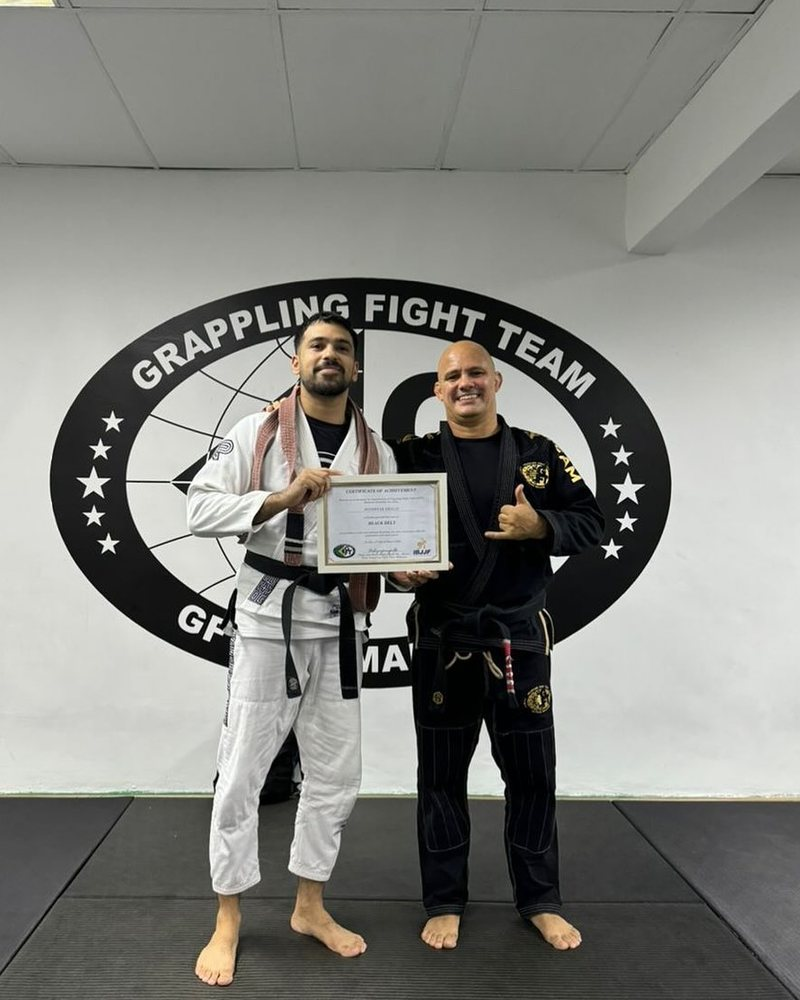
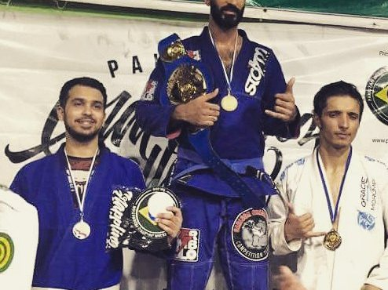
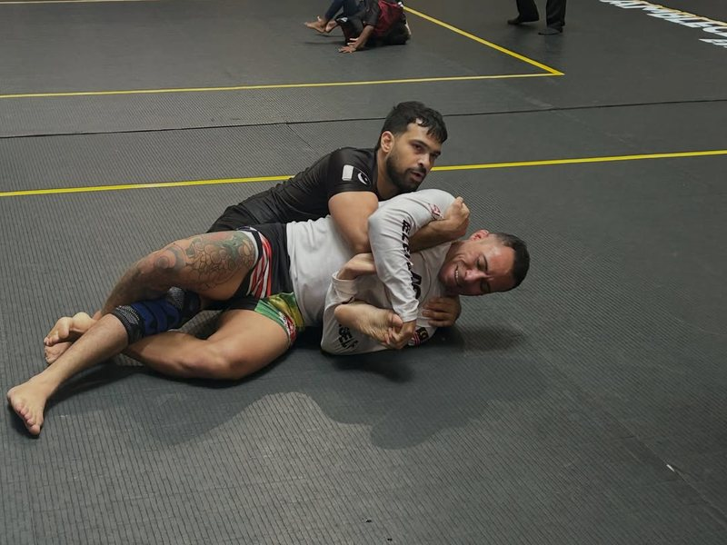
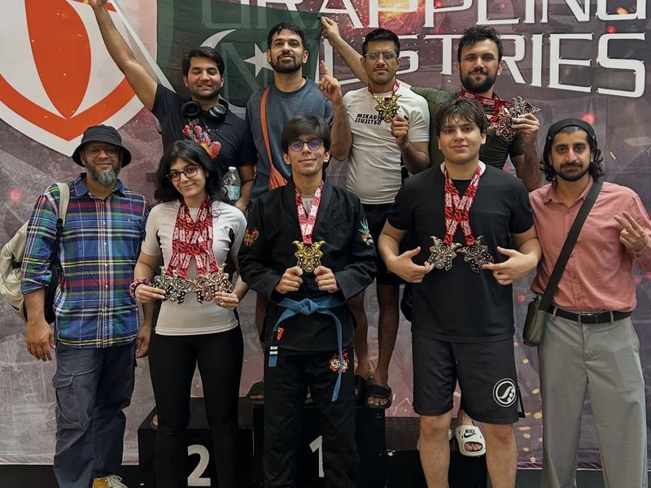

Adults Gi Jiu Jitsu
Mon – Fri mornings · Mon, Wed, Fri evenings
Fundamentals for white belts, Advanced for four-stripe white belts and up. We don’t just teach techniques — we build understanding and problem-solving.
Explore Gi Jiu JitsuFounder & head coach · Mikado Jiu Jitsu
Brazilian Jiu-Jitsu black belt under Professor Pedro Falbo, and the founder and head coach of Mikado Jiu Jitsu. Thirteen years after his first jiu-jitsu class, he still competes, and he led Mikado’s first international team to second place out of 61 teams.

Lineage
Every student can trace their jiu-jitsu back, teacher by teacher, to the founders of the art.
The journey
2011
A friend dared him to sign up for a Pak Fight Club bout with no training and no experience. He lost the fight and found something more important: a purpose.
2013
Starts Brazilian Jiu-Jitsu as a white belt and trains at Izza MMA in its first year under Coach Salman. One of his amateur MMA fights ends in a TKO win in 15 seconds.
2015
Takes bronze at 76 kg at a GFT No-Gi tournament, and silver in the open-weight absolute division at Pakistan Grappling Challenge 3.

2016–17
Trains and competes in Malaysia, medalling in the absolute division at Copa da Malásia.
2018
Promoted to purple belt on 18 December 2018, five years after starting as a white belt.
2023
Sidelined for months by an ACL injury, he puts that energy into founding Grapplefest, his own jiu-jitsu and grappling league, to give athletes in Pakistan a well-run competition. Later that year he is back competing against experienced black belts, and teaching kids and adults at GFTeam Malaysia under Professor Pedro Falbo.
2024
Receives his black belt from Professor Pedro Falbo in March, almost twelve years after his first class, and opens Mikado Jiu Jitsu in Lahore the same year. In August he promotes his own students for the first time.
2026
Warms up with four wins from four fights and double gold in February. In August he makes his black belt debut at Grappling Industries Kuala Lumpur, going 3–1 and taking silver.

2026
Leads the first local jiu-jitsu gym from Pakistan to compete internationally as a team. With just 9 adults and 2 kids, Mikado finishes second overall out of 61 teams, with 7 gold, 11 silver and 2 bronze medals.

In his words
“When I began this journey almost 12 years ago, I remember viewing black belts as some kind of mythical creatures, but today, I stand among them.”
“There’s no secret sauce overseas that magically makes training better. It’s fundamentals, consistency, and how coaches structure their classes. That’s what really matters.”
“As a coach, I’ve always wanted the best for my students. I’ll always go the extra mile for them.”
Follow Shaheryar on Instagram: @sherri.jitsu
Train with him
Shaheryar teaches these classes at Mikado Jiu Jitsu. Your first class is a Day Pass — message us to book.
Mon – Fri mornings · Mon, Wed, Fri evenings
Fundamentals for white belts, Advanced for four-stripe white belts and up. We don’t just teach techniques — we build understanding and problem-solving.
Explore Gi Jiu Jitsu
Tue & Thu · 6:00 pm and 7:00 pm
Dynamic movement, leg locks, wrestling integration and the latest competition-tested techniques, from leg entanglements to back takes.
Explore No Gi
Ages 3–5: Mon, Wed, Fri 4:00 pm · Ages 6–12: Mon – Fri 5:00 pm
Led by a black belt coach with international experience teaching children. Discipline, respect and confidence — and our young athletes have brought home international medals from Malaysia.
Explore the kids program
By appointment · 1-on-1 or 2-on-1
One-on-one or two-on-one sessions, arranged with your coach: BJJ privates with black belt Shaheryar Khalid, MMA privates with pro fighter Amjad Khan.
Explore private trainingVisit
Book a class or a private session with Shaheryar on WhatsApp, or call us.